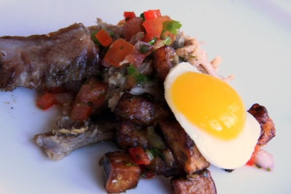

Pulled Pork

Photo: Dana Moos (CC BY 2.0)
A dry-rubbed boneless pork loin slow-cooked until tender, shredded, and reheated in a homemade tangy ketchup-based barbecue sauce.
Directions
- In a small bowl, combine the dry ingredients. Rub into both sides or the pork roast. Place a wire rack in the bottom of a 3-4 qt or larger crockpot. Pour water in pot and place pork on wire rack. Cover and cook on low for 8 to 10 hours. Or on high for 4 to 5 hours. About 1 hour before serving combine ingredients for Barbecue sauce in a medium saucepan. Place on medium high heat, bring to a simmer, cook stirring occasionally for 30 minutes. Remove pork from slow cooker and let stand for 20 minutes or so. Using 2 forks shred pork to suit. Remove rack from pan and remove all grease and unsightly drippings. Lower heat to low add the shredded pork and sauce to pan and reheat for about 30 minutes.
- SAUCE ingredients ABOVE
- In a small bowl, combine the dry ingredients: chili powder, light brown sugar, garlic powder, paprika, lemon pepper seasoning, dry mustard, crushed dried thyme, and ground ginger. Rub into both sides of the pork roast.
- Place a wire rack in the bottom of a 3 to 4 quart or larger crockpot. Pour the water into the pot and place the pork on the wire rack.
- Cover and cook on low for 8 to 10 hours, or on high for 4 to 5 hours.
- About 1 hour before serving, combine the sauce ingredients (ketchup, minced onion, minced garlic, brown sugar, cider vinegar, Worcestershire sauce, dry mustard, horseradish, black pepper, crushed dried thyme, and dried rosemary) in a medium saucepan. Place over medium-high heat, bring to a simmer, and cook, stirring occasionally, for 30 minutes.
- Remove the pork from the slow cooker and let stand for 20 minutes or so. Using 2 forks, shred the pork to suit.
- Remove the rack from the pan and remove all grease and drippings. Lower the heat to low, add the shredded pork and sauce to the pan, and reheat for about 30 minutes.
Goes well with
https://lizotte.cool/recipe/pulled-pork.html